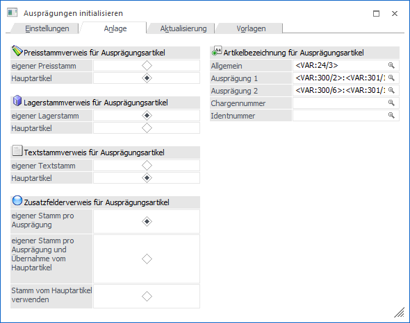
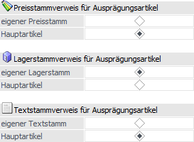
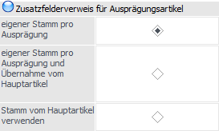
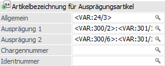

In dem Register "Anlage" können die Standard-Stammdatenverweise für neue Ausprägungsartikel definiert und eine Vorbelegung für die Artikelbezeichnung der Ausprägungsartikel hinterlegt werden.
Hinweis
Standardmäßig wird das Fenster für die Register "Einstellungen" und "Anlage" in einem "Lesemodus" geöffnet, d.h. es können die bestehenden Einstellungen kontrolliert, Änderungen allerdings nicht durchgeführt werden. Hierfür muss zunächst mit Hilfe des Buttons "Bearbeiten" der "Bearbeitungsmodus" aktiviert werden.

Hauptstammdatenverweise

Ø Stammdatenverweis für Ausprägungsartikel
An dieser Stelle kann für die Bereiche
ü Preisstamm
ü Lagerstamm
ü Textstamm
entschieden werden, ob die Ausprägungen einen eigenen Stamm haben oder ob die Ausprägung auf die Stammdaten des Hauptartikels zugreift.
Hinweis
Die hier getroffene Einstellung stellt die Standardeinstellungen für neu anzulegende Ausprägungen dar, können aber während der Anlage (im "Artikelstamm" über das Register "Auspr." oder im "Ausprägungen erfassen" über den Button "Erw. Ansicht") geändert werden.
Zusatzfelderverweis für Ausprägungsartikel

Ø Zusatzfelderverweis für Ausprägungsartikel
Hier kann entschieden werden, ob die Ausprägung auf den Zusatzfelderstamm des Hauptartikels zugreifen soll oder einen eigenen Stamm haben soll. Dazu stehen folgende Optionen zur Verfügung:
ü Eigener Stamm pro
Ausprägung
Jede Ausprägung die angelegt wird, erhält einen eigenen
Zusatzfelderstamm.
ü Eigener Stamm pro Ausprägung und
Übernahme vom Hauptartikel
Jede Ausprägung erhält bei der Anlage einen
eigenen Zusatzfelderstamm, wobei bei der Neuanlage die Zusatzfeldwerte vom
Hauptartikel vorbelegt werden.
Hinweis
Damit Zusatzfelder vom Hauptartikel übernommen/vorbelegt werden können, müssen diese natürlich vorhanden sein. D.h. werden bei einer Neuanlage eines Ausprägungsartikels zuerst im Register "Auspr." die Ausprägungen angelegt, und erst nachträglich die Zusatzfelder beim Hauptartikel eingetragen, enthalten die Zusatzfelder für die zuvor angelegten Ausprägungen keine Werte.
ü Stamm vom Hauptartikel
verwenden
Bei der Neuanlage einer Ausprägung werden die Zusatzfelder vom
Hautpartikel verwendet. D.h. die Zusatzfelder sind nur einmal im System und
werden von der Ausprägung mitverwendet.
Hinweis
Die hier getroffene Einstellung stellt die Standardeinstellungen für neu anzulegende Ausprägungen dar, können aber während der Anlage (im "Artikelstamm" über das Register "Auspr." oder im "Ausprägungen erfassen" über den Button "Erw. Ansicht") geändert werden.
Artikelbezeichnung für Ausprägungsartikel

Ø Artikelbezeichnung für Ausprägungsartikel
An dieser Stelle kann eine variable Vorbelegung für die Artikelbezeichnung eingegeben werden. Hierfür kann auf die Variablen aus dem Artikelstamm (T024), aus den Ausprägungseinstellungen (T300) und aus den Ausprägungen (T301) zugegriffen werden.
Hinweis
Beim Artikelstamm (T024) sind die Felder Chargennummer (C068) und Ablaufdatum (C069) mit den Daten des Ausprägungsartikels belegt, alle anderen Felder sind vom Hauptartikel belegt.
Es stehen die folgenden Eingabefelder zur Verfügung:
ü Allgemein
Wird generell bei
Ausprägungsartikel an erster Stelle verwendet.
ü Ausprägung1
Wird bei Artikeln
mit der Ausprägung 1 verwendet.
ü Ausprägung2
Wird bei Artikeln
mit der Ausprägung 2 verwendet.
ü Chargennummer
Wird bei Artikeln
mit Chargen, LIFO- oder FIFO-Verfahren verwendet.
ü Identnummer
Wird bei Artikeln
mit Identnummer verwendet.
Die gewünschten Variablen können über den Matchcode (im Fenster "Variable Einfügen") gesucht und übernommen werden, wobei die Anzeige immer als Variable erfolgt. Zusätzlich können die Variablen noch um einen beliebigen manuell eingegebenen Text ergänzt werden.
Achtung
Die Eingaben werden additiv verwendet, d.h. bei einem Chargenartikel mit Ausprägung 1 und Ausprägung 2 wird die Artikelbezeichnung aus den Eingaben Allgemein, Ausprägung 1, Ausprägung 2 und Chargennummer zusammengesetzt.